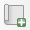
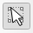
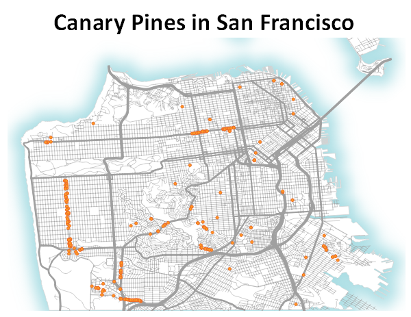

12 Composing a Map
One common task in any desktop GIS is to produce a map to include in a document or presentation. In QGIS we create maps in the Print Composer. Let’s make a finished map of our tree locations.
12.1 Prepare your Layers
The first thing we need to do is add all the layers we want in our finished map to our Map Canvas in the main QGIS window. Turn on your trees and roads layers and add in any other data you think will help support the tree locations such as the shoreline data.
We also need to style our layers here as well. Take some time to work with your layer symbology. Make choices that you feel help communicate the data well. Simple or plain choices are often better than complicated or fancy symbology. For example, you could use a tree-shaped icon to represent your trees, but this would probably make a rather busy map. A simple circle icon might be better.
Just get to a point where you have a solid draft. We can always make changes later if we decide we need to adjust.
12.2 Working in the Print Composer
Once you’ve added all the layers you need to your Map Canvas and styled them in a way you like, we can start composing our map.
- Open the Print Composer by clicking on the Project menu and choosing New Print Layout.
- Give your new Print Layout a name. I’ll call mine “Canary Pine Locations”. You can have multiple map layouts using the data in this map document, so pick a name that will remind you of the purpose of this map. Click OK when you’ve picked a name. The Print Composer will now open.
- The white box in the middle of the window is where you will compose your map. Right click in this white space and choose Page Properties from the menu that appears. The menu on the right will now let us adjust the page size and orientation. Let’s use size Letter and Landscape orientation for this map.
- Add a map to your layout by clicking the Add Map tool and then clicking and dragging on your map layout.  You can adjust the size so don’t worry if it’s not perfect at first. The Move Item tool moves and adjusts items in your map. 
- Adjust the scale of your map by selecting your map. In the Item Properties on the right, adjust the scale number to zoom in or out of your map data. I used a scale of about 40,000.
- Add other items to your map as needed: title, legend, scale bar, etc. The item properties for each item you add are available by selecting the item and editing the properties in the pane on the right side of the Print Composer window.
- When you’ve made a layout you like, you can export the map to a variety of formats. On the Layout menu, select Save as Image. Navigate to where you would like to save the image, name the file, and choose the type of image. Let’s pick .png for this image. Click Save.
- Make any adjustments to the image parameters you would like. Click Save to finish the process.
- When you’re finished exporting your map, you can close the Print Composer window.

Your map might look something like this. I added an Outer Glow in the Draw Effects menu to the Shoreline data to achieve the fading blue outline.
You may want to add background layers such as coastlines or land masses from data sources like: